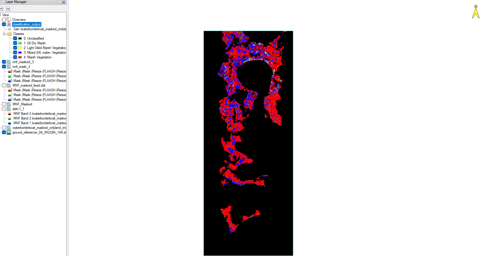

Remote sensing / GEOG 461
Oil Spill Detection in Coastal Wetlands
Endmember-based image classification using Spectral Angle Mapper.
The problem
How can spectral differences help distinguish oiled coastal vegetation from other land cover? This lab used a coastal wetland image to explore endmember selection and classification uncertainty.
My role
I carried out the MNF, PPI, endmember-extraction, and SAM workflow, examined the resulting spectral curves, and interpreted the classification for my lab report.
Data and method
I used the coastal wetland imagery supplied for GEOG 461 Lab 6.
- Applied a Minimum Noise Fraction transformation and compared the transformed bands.
- Used the Pixel Purity Index to identify candidate extreme pixels.
- Selected four endmember classes with the n-D Visualizer and exported their mean spectral signatures as a spectral library.
- Ran Spectral Angle Mapper and assessed the result visually.
Imagery sensor and acquisition date: [ADD]. These are not identified in the supplied report.
Classification result
ORIGINAL LAB FIGURE

What I found
In my visual assessment, oil-associated classes were mainly near the coast, while the vegetation class was mostly inland. The mixed oil, water, and vegetation class was less certain because its endmember was difficult to isolate. Similar spectral signatures also created potential confusion between classes.
This was a visual assessment, not an accuracy result based on independent reference samples. No numerical accuracy measure is claimed here.
What I would do differently
I would refine the mixed-class endmember, document the source imagery more fully, and compare the classification with independent reference samples before reporting an accuracy measure.
Project source
GEOG 461 Lab 6, “Endmember-Based Classification for Oil Spill Detection.” The classification figure is reproduced from my report. The reflection describes proposed future improvements.